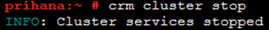
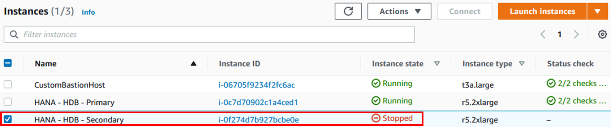
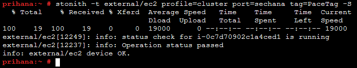

Task 04. Test Resource Agent
클러스터 리소스 에이전트 테스트는 올바른 클러스터 구성을 보장하고 문제를 해결하고 조사하기 위한 클러스터 관리의 중요한 부분입니다. 리소스 에이전트는 노드에 서비스 중단을 일으킬 수 있으므로 실행중인 클러스터 또는 응용 프로그램으로 테스트해서는 안됩니다. 이 테스트를 시작하기 전에 두 노드 모두 클러스터가 중지되었는지 확인하십시오.
HA Cluster 중지
Secondary 노드 Cluster (sechana) 중지 확인 후 Primary Node (prihana) Cluster 중지
Secondary 노드 Cluster (sechana) 중지
-
EC2 Instance Console에 접속 합니다.
-
HANA-HDB-Secondary 인스턴스를 선택하고, Connect 버튼을 누릅니다.

-
Session Manager 를 선택하고, Connect 버튼을 누릅니다. Session Manager를 통해 sechana 인스턴스에 접속합니다.

-
sechana Cluster 상태 확인
sudo su - crm cluster status -
sechana Cluster 중지 (root 유저사용)
sudo su - crm cluster stop -
sechana Cluster 상태 확인
sudo su - crm cluster status
Primary Node (prihana) Cluster 중지 7. EC2 Instance Console에 접속 합니다.
-
HANA-HDB-Primary 인스턴스를 선택하고, Connect 버튼을 누릅니다.

-
Session Manager 를 선택하고, Connect 버튼을 누릅니다. Session Manager를 통해 prihana 인스턴스에 접속합니다.
-
Primary node (prihana) Cluster 상태 확인 (root 유저사용)
sudo su - crm cluster status
-
prihana Cluster 중지 (root 유저사용)
sudo su - crm cluster stop
-
Primary node (prihana) Cluster 상태 확인 (root 유저사용)
sudo su - crm cluster status
EC2 Stonith 에이전트 테스트
EC2 Stonith 에이전트를 테스트하면 IAM 정책, AWS CLI 구성 및 EC2 API 엔드 포인트에 대한 연결이 제대로 작동하는지 확인하기 위해 노드 중 하나가 중지됩니다. 다음과 같은 명령줄에서 상황에 알맞은 매개 변수를 바꿉니다.
stonith -t external/ec2 profile={AWS-PROFILE} port={CLUSTER-NODE2} tag={AWS-TAG-CONTAINING-HOSTNAME} -T off {CLUSTER-NODE2}
변수는 아래와 같은 명령으로 확인할 수 있습니다. (root 유저사용)
sudo su -
crm configure show res_AWS_STONITH
사용되는 매개변수는 다음과 같습니다.
- {AWS-PROFILE} : cluster : 기본값을 사용하며 필요한 경우 다른 AWS CLI 프로필 이름으로 바꿉니다.
- {CLUSTER-NODE2} : sechana 또는 prihana : 다른 클러스터 노드의 이름 또는 IP 주소입니다.
- {AWS-TAG-CONTAINING-HOSTNAME} : PaceTag : 두 클러스터 노드에 대한 EC2 인스턴스의 태그 이름입니다.
-
아래 명령은 클러스터 노드 2를 종료합니다. 명령 실행 중에 오류가 발생하여 작동하지 않는 경우 확인합니다. Primary Node에서 테스트 (root 유저사용)
sudo su - stonith -t external/ec2 profile=cluster port=sechana tag=PaceTag -T off sechana -
EC2 Instance Console에 접속하여 sechana 상태를 확인합니다.
-
HANA-HDB-Secondary 인스턴스가 stopped 상태 입니다. sechana 를 Start 하여 정상 상태인지 확인합니다. 
-
HANA-HDB-Secondary 인스턴스를 선택하고, Action 버튼을 누릅니다. Instance State 에서 Start 를 누릅니다. Yes, Start 버튼을 누릅니다.

-
HANA-HDB-Secondary 정상적으로 부팅이 되면, prihana 인스턴스에 접속합니다.
-
다음 명령을 사용하여 노드의 상태만 확인할 수 있습니다. Primary Node에서 테스트 (root 유저사용)
sudo su - stonith -t external/ec2 profile=cluster port=sechana tag=PaceTag -S
오버레이 IP 에이전트 테스트 (aws-vpc-move-ip)
오버레이 IP 에이전트를 테스트하면 테스트가 실행되는 노드의 오버레이 IP 주소가 로컬로 구성되고 그에 따라 VPC 라우팅 테이블이 수정됩니다. 두 시스템 모두에서 한 번에 한 시스템 씩 root User로 다음 명령을 실행합니다.
OCF_RESKEY_address={VIRTUAL-IPV4-ADDRESS} \
OCF_RESKEY_routing_table={AWS-ROUTE-TABLE} \
OCF_RESKEY_interface=eth0 OCF_RESKEY_profile={AWS-PROFILE} \
OCF_ROOT=/usr/lib/ocf /usr/lib/ocf/resource.d/suse/aws-vpc-move-ip start
변수는 아래와 같은 명령으로 확인할 수 있습니다. (root 유저사용)
sudo su -
crm configure show res_AWS_IP
사용되는 매개변수는 다음과 같습니다.
- {VIRTUAL-IPV4-ADDRESS} : 192.168.1.99 : HANA Node Cluster에서 사용하는 VIP 주소입니다.
- {AWS-ROUTE-TABLE} : 오버레이 IP 주소의 AWS 라우팅 테이블 ID입니다. 이는 모든 실습 사용자마다 다르므로 반드시 확인하여 변경해야합니다.
- {AWS-PROFILE} : cluster : 필요한 경우 AWS CLI 프로필 이름을 바꿉니다.
-
오버레이 IP 에이전트 시작 (root 유저 사용)
- {AWS-ROUTE-TABLE} 확인한 rout table ID로 변경 필요
sudo su - OCF_RESKEY_address=192.168.1.99 \ OCF_RESKEY_routing_table=<AWS-ROUTE-TABLE> \ OCF_RESKEY_interface=eth0 OCF_ROOT=/usr/lib/ocf \ OCF_RESKEY_profile=cluster /usr/lib/ocf/resource.d/suse/aws-vpc-move-ip start
-
IP가 로컬로 설정되었는지 확인하십시오.
- {AWS-ROUTE-TABLE} 확인한 rout table ID로 변경 필요
sudo su - OCF_RESKEY_address=192.168.1.99 \ OCF_RESKEY_routing_table=<AWS-ROUTE-TABLE> \ OCF_RESKEY_interface=eth0 OCF_RESKEY_profile=cluster \ OCF_ROOT=/usr/lib/ocf /usr/lib/ocf/resource.d/suse/aws-vpc-move-ip monitor또는 다음 명령을 통해 Linux에 구성된 IP를 확인할 수도 있습니다.
ip address show -
테스트 중이 아닌 노드에서 IP를 확인해봅니다. (예. 현재 prihana에서 오버레이 IP를 테스트 중이라면 sechana에서 확인)
-
오버레이 IP 에이전트 중지 (root 유저 사용)
- {AWS-ROUTE-TABLE} 확인한 rout table ID로 변경 필요
sudo su - OCF_RESKEY_address=192.168.1.99 \ OCF_RESKEY_routing_table=<AWS-ROUTE-TABLE> \ OCF_RESKEY_interface=eth0 OCF_ROOT=/usr/lib/ocf \ OCF_RESKEY_profile=cluster /usr/lib/ocf/resource.d/suse/aws-vpc-move-ip stop
HA Cluster 시작
테스트가 완료되었으므로 HA Cluster를 시작합니다. Cluster Primary node(prihana) 시작 후 Secondary 노드(sechana) 시작합니다.
-
EC2 Instance Console에 접속 합니다.
-
HANA-HDB-Primary 인스턴스를 선택하고, Connect 버튼을 누릅니다.
-
Session Manager 를 선택하고, Connect 버튼을 누릅니다. Session Manager를 통해 prihana 인스턴스에 접속합니다.
-
Primary node (prihana) Cluster 시작 (root 유저사용)
sudo su - crm cluster start -
Primary node (prihana) Cluster 상태 확인 (root 유저사용)
sudo su - crm cluster status -
EC2 Instance Console에 접속 합니다.
-
HANA-HDB-Secondary 인스턴스를 선택하고, Connect 버튼을 누릅니다.
-
Session Manager 를 선택하고, Connect 버튼을 누릅니다. Session Manager를 통해 sechana 인스턴스에 접속합니다.
-
Secondary node (sechana) Cluster 시작 (root 유저사용)
sudo su - crm cluster start -
Secondary node (sechana) Cluster 상태 확인
sudo su - crm cluster status
© 2020, Amazon Web Services, Inc. or its affiliates. All rights reserved.